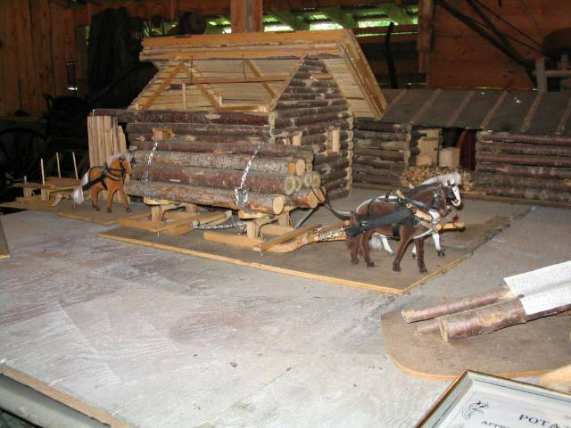
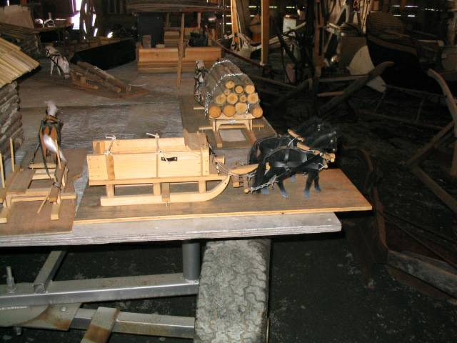
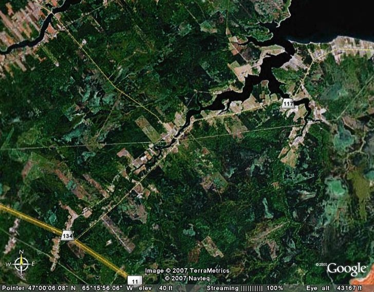

The Family Chronicle
No. 132 February 14, 2006
____________________________________________________________________
Photos Wanted


The above photos were taken at the Museum
at the Napan Agricultural Fair grounds
I’m looking for photographs of wagons, sleds, mowers, rakes and other farm equipment of the first half of the century. They are hard to come by. I even had a lady from Minnesota write me asking if I had any photos of bobsleds. If you have any that I could borrow and scan. I would be delighted. Or have them scanned and email them to me. I would like to add more photos to
upcoming newsletters.
Things for a stormy day
Found myself at “sixes and sevens” during a recent stormy day so decided to see how many times I could fold a piece of paper in half. First I tried a note pad, then a standard letter, next a legal size pad and finally a newspaper. Would you believe it, I was not able to fold any one of them more than seven times. Please try it and let me know if you can do better than seven.
A Record Winter
This winter is a record with neither snow, ice nor cold temperatures until the last two weeks
February of 1952 set a different record, at least in the Miramichi. Schools were closed to days that month; high winds meant that roads once plowed soon filled in and so many days in a row, meant that the snow was very deep. Harold MacDonald’s truck was stuck on the Finno side of Ken’s hill from 6:00 am one morning until suppertime the next day. Snow blowers were a rare sight and mostly crawler tractors and road graders doubled as snow ploughs.

Thanks to Richard MacDougall for the above photo of Black River taken from space.
Entering the Black river at the top right of the photo, one passes MacDougall’s Point and the remnants of the old Victoria Bridge. Turning left takes one into the Little Black River (Little Branch) under the Little Branch Bridge and on up to Fowlie’s Mill. There are faint traces of the MacKenzie road which eventually joined Route 11. Across from MacKnight’s Point can be seen the Shortcut from Black River to Point Aux Carr (known to the Point Aux Carr folk as the Black River Road, Further along is the “beautiful Church Point and cemetery, then can be seen the Napan Road. On the North side of Black River, the settlement of Wells Brook can be easily seen
The Family Chronicle (Copyright) is an occasional newsletter published by Don Glendenning and posted on the family website. It is intended to share information about my family, community and the times in which I grew up. While every effort is made to be accurate, errors are likely to occur. Comments, enquiries and information may be sent to 62 Queen Elizabeth Drive, Charlottetown, PEI, C1A 3A9. Tel: 902 892 5859. Email: dglende@auracom.com Web: www.glendenning.net/don